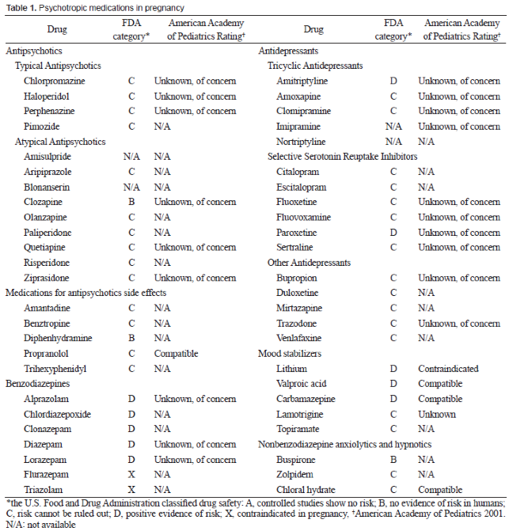
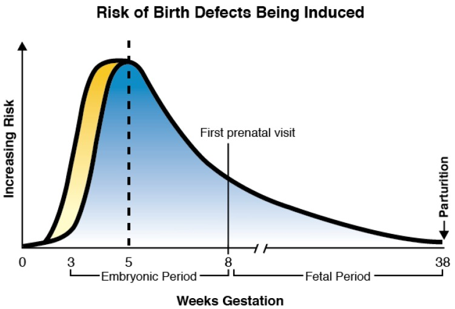

55 임신 중 약물 치료의 실제
조현병 환자가 임신을 원하거나 임신했을 때 워낙 까다로운 문제가 동반되기 때문에, 대부분의 의사들은 이를 매우 부담스럽게 여긴다. 실제 임상에서는 다양한 상황에 접하게 되는데, 이는 크게 안정적으로 잘 치료받고 있는 환자가 임신을 원하는 경우, 약물 치료 중인 환자가 예상하지 못한 채 임신을 해버린 경우, 약을 먹고 있던 혹은 끊었던 환자가 임신 중에 재발한 경우, 그리고 임신/수유기에 초발하게 된 경우로 나눌 수 있다.
55.1 임신할 것인가에 대한 결정
치료 중인 조현병 환자가 임신을 원하는 경우, 의사는 딜레마에 빠진다. 조현병 자체의 유전 가능성을 포함하여, 투약에 의한 영아의 장기적인 부작용, 무엇보다 과연 환자가 영아를 잘 돌 볼 수 있을 지에 대한 의문때문에 선뜻 임신을 권하기 힘들어진다. 건강한 아이를 잘 낳아 키우면 문제가 없겠지만, 결과가 좋지 않으면 의사들은 법적, 도의적 책임에 직면하게 된다. 수반될 위험을 제대로 설명해주지 않았다는 비난을 받거나, 임신임을 알면서도 약물 치료를 강행했다고 손가락질 당하고, 역으로 임신 중 재발을 막지 못했다는 원망을 듣는다. 그래서 가급적이면 적극적인 피임을 권하여 환자가 완전히 건강해질 때까지 임신을 미루기 바란다.
그러나 대부분의 정신과 의사는 이러한 부정적인 생각을 입 밖에 내지 못한다. 조현병의 유전 가능성을 최초로 제기한 독일의 정신과 의사 Rüdin1은 1900년대 초에 이미 조현병을 비롯한 주요 정신질환자에 대해 우생학적 관점에서 출산을 금지해야 한다고 주장하였다. 그는 나치 치하에서 실제로 환자들에 대한 불임 수술 및 대량 학살에 관여하였고, 불구를 갖고 태어난 소아청소년을 안락사시켜야 한다는 비윤리적 발언마저 끼리지 않았다.[1]
1 Ernst Rüdin (1874~1952): 스위스 태생의 독일 정신과 의사. 뮌헨에 위치한 Max Plank Institute of Psychiatry 소장을 역임하였다. 정신 유전학 연구자이자 Nazi 당원으로 우생학을 강력하게 지지하여, Nazi의 인종 청소에 적극 협력하였다.
미국 역시 사정이 크게 다르지 않았다. 다인종 다민족이 모여 만들어진 미국 사회에서 주류 백인 계층은 지능지체, 정신질환, 범죄자를 같은 범주로 보았고, 오염된 혈통이 미국 국민의 자질을 떨어뜨린다는 위기감에 사로잡혔다. 나치처럼 대놓고 법령을 집행하지는 않았지만, 대부분의 환자들은 주립정신병원을 비롯한 시설에 수용되어있었고, 여기서는 이성 간의 접촉이 차단됨은 물론 불임 수술이 암암리에 행해졌다.[2]
이러한 관행에 정신과 의사들이 깊숙이 관여되어 있었다는 수치스러운 과거때문에 현대의 정신과 의사들은 환자가 임신을 원할 때 적극적으로 만류하지 못한다. 자칫 환자를 모욕하게 될까봐, 환자의 자율성을 존중한다는 구실을 내세워 모든 책임을 떠 넘긴다. 그들은 환자가 모든 위험 요소를 저울질 하여 이성적으로 결정내릴만한 능력이 없다고 생각하면서도, 환자 대신 결정을 내릴 권한은 없다는 입장을 취한다. 물론 임신과 같은 중요한 문제에 대해 환자 대신 결정을 내리기는 힘들다. 그러나 환자가 제대로된 결정을 내릴 수 있도록 돕는 것은 의사의 책임에 속한다. 환자들의 의사결정 능력과 증상의 심각도가 꼭 일치하는 것은 아니다. 증상이 잔존하더라도, 교육을 통해 의사결정 능력을 최대로 끌어올릴 수 있다. 이런 노력을 통해 환자 스스로 결정을 내리는 것을 도와주는 것은 의사가 충분히 할 수 있고 또 해야하는 영역이다.[3] 이는 과거의 고지된 동의(informed consent) 개념 혹은 보다 최근의 공유된 의사결정(shared decision making) 모델과 맞닿아 있다.
사실 임신을 원하느냐 원하지 않느냐는 결정은 미혼의 여성 환자라도 한번쯤 논의가 되어야 한다. 성폭행을 포함하여, 예기치 않은 성관계로 인해 준비되지 않은 상태에서 임신이 될 수 있다. 따라서 여성의 입장에서 임신의 문제는 수동적으로 기다리는 문제가 아니라 적극 대처해야 하는 문제이다. 조현병 환자에게 자녀란, 하늘이 베풀어주는 선물이 아니라 철저한 계획과 의도적 노력으로 얻어내야 하는 결실이다.
유전이나 태아에 대한 약물의 영향에 대한 고려 외에도, 환자를 포함하여 가족 및 주위 환경이 얼마나 아이를 제대로 키울 수 있는지가 관건이 된다. 만약 엄마가 재발하여 입원을 하게 될 지라도 대신 아이를 보살필 수 있는 여건이 마련되어 있어야 한다. 배우자의 상황, 경제적 여력, 주거 환경, 환자와 배우자의 원가족, 일차의료에의 접근성 등이 검토되어야 한다.
특히 문제가 되는 것은 부부가 모두 심각한 정신질환을 앓고 있는 경우이다. 환자들이 치료 과정 중에 인연을 맺으면서 결혼하게 되는 경우가 있다. 부부가 조현병일때 그 자녀가 발병하는 비율은 거의 50%에 달한다. 게다가 어느 한쪽 부모가 증세가 악화된 경우 다른 배우자의 협조를 구하기 어렵다. 이 때는 확대 가족을 모두 참여시켜 임신을 결정해야 할 수도 있다.
55.2 임신 계획 이후의 준비
임신을 하기로 결정했다고 해서 바로 임신이 되는 것은 아니다. 특히 고프로락틴 혈증을 일으키는 항정신병 약물이라면 오랜동안 무월경 상태를 유지했을 가능성이 크다. 이 상태에서는 수태가 어려우므로, 약물의 용량을 줄이거나 프로락틴에 영향이 적은 퀘티아핀, 아리피프라졸, 지프라시돈 등의 약물로 교체를 고려한다. 특히 아리피프라졸은 기존 약제에 추가하는 것만으로도 혈중 프로락틴 수치를 낮출 수 있다.[4] 만약 장기지속형 주사제를 사용하고 있는 중이라면 경구 제제로 바꿀 수 있다. 임신 첫 삼분기에는 약물을 가급적 사용하지 않는다는 원칙 하에서, 여건이 허락하면 임신이 확인되자마자 약물을 잠깐 끊을 수 있는데, 장기지속형 주사제 사용 중이라면 그러기 어렵다.
간절히 임신을 원하는데도 수태가 되지 않는 경우, 조현병 환자라도 인공수정 등 다양한 보조 생식 기술(assisted reproductive technology, ART)을 시도할 수 있다. 덴마크에서 1994년에서 2009년 사이에 보조 생식 치료를 받은 대상자를 조사했을 때 이중 0.6%는 정신병적 장애를 앓는 환자였다.[5] 간절히 원하는데도 쉽사리 임신이 되지 않는 경우, 환자와 배우자는 이를 항정신병 약물 때문이라 생각하여 이미 약물을 끊기로 결정했을 가능성이 크다. 설상가상으로 불임치료를 위한 성선호르몬(Gonadotropin-releasing hormone, GnRH) 투여라던지, 배란 촉진을 위한 clomiphene 투여 등은 그 자체가 심한 기분의 변동을 유발하며, 드물게는 정신증상을 악화시킬 수 있다.[6,7] 이런 환자를 맡고 있는 정신과 의사라면, 재발의 위험을 무릅쓰면서 이렇게 까지 위험한 시도를 해야하나 싶지만, 환자와 배우자의 입장에서는 그만큼 자녀를 바라고 있다는 뜻이기도 하다.
임신을 계획하고 있거나 임신을 하게된 환자들은 병식이 있는 환자라도, 약이 태아에게 나쁜 영향을 미칠 것을 두려워해서 투약을 거부하는 경우가 많다. 임신 계획을 밝힌 후 의사와 상의하여 용량을 낮춰 유지하던 환자라도 막상 임신에 성공하면, 의사와 상의없이 약을 끊곤 한다. 약을 끊은 환자를 책망하며 억지로 약을 먹게 할 수는 없지만, 이후 재발의 징후를 면밀히 살펴야 하며, 가급적이면 두번째 삼분기 부터라도 약을 다시 먹도록 설득한다. 만약 약물을 중단한 사이에 재발하여 환자의 증상이 심각해진다면 비자의적이라도 치료를 강행해야 한다. 이에 대해 환자가 태아를 죽일 거냐고 반론을 제기할 수는 있지만, 스스로 생존할 수 없는 태아는 법률적으로는 개인으로 취급되지 않기 때문에 의사가 법적 책임을 지지는 않는다. 물론 항정신병 약물을 사용한다고 태아에 대한 살해 시도로 간주되지도 않는다. 물론 산모의 의사에 반하여 치료하는 것은 배우자를 비롯한 보호의무자의 동의가 있어야 가능함은 물론이다. 배우자가 동의하지 않는다면 의사로서 할 수 있는 방법이 없다.
55.3 임신한 조현병 환자의 치료
55.3.1 치료적 관계 형성과 법적인 문제
환자가 임신을 하자마자 법적인 책임 공방이 시작될 수 있다. 계획에 없는 임신을 한 경우, 특히 환자가 정신증 상태에서 무분별한 성행위로 임신에 이른 경우 의사의 부주의에 의해 임신이 되었다는 책임 논란이 있을 수 있다. 만약 환자의 정신상태가 심각하여 도저히 산모 역할을 할 수 없다고 판단되면 법률에 근거한 치료적 유산을 고려해야 한다. 하지만 현실적으로 낙태를 시행하기는 쉽지 않다. 2021년에 접어들면서 낙태죄 처벌규정이 폐지되었으나, 그 대안 법령은 준비되지 못했다.2 여전히 낙태를 둘러싼 사회적 논란은 잦아들지 않았으며, 의사들도 행동의 기준을 마련하지 못한 상태이다.
2 우리나라에서는 원래 임신의 지속이 모체의 건강을 심각하게 해치거나 해칠 우려가 있는 경우를 제외하고, 여성이 낙태했을 때에는 1년 이하의 징역 또는 200만원 이하의 벌금에 처하며, 낙태를 시술한 의사는 2년 이하의 징역에 처하고 있었다. 2019년 헌법재판소는 이러한 낙태죄에 대해 헌법불합치 결정을 내렸다. 국회는 대체 법안을 마련해야 했으나, 2020년까지 마련되지 않았기 때문에 2021년 1월 1일을 기하여 해당 여성은 물론 의사에 대한 처벌 조항은 사라졌다. 반면 미국에서는 1973년 Roe vs Wade 판례를 통해 여성의 임신중지권을 인정고 있었으나, 2022년 6월 갑자기 연방대법원이 이 판례를 50여년 만에 뒤집었다. 그래서 미국 50개 주 가운데 약 13곳에서 즉시 낙태가 불법화되었다.
이보다 더 흔한 경우는 잘 지내던 환자가 임신 사실을 알고 약물을 끊겠다고 하는 경우이다. 이 때 의사는 약물치료가 산모와 태아에게 미칠 수 있는 악영향과 함께, 약을 끊어 재발했을 때 예상되는 위험에 대해 설명하여야 하나, 막상 법정 소송이 발생하면 이는 의사를 지켜주지 못한다. 외국 문헌에서는 환자와 보호자에게 이를 충분히 설명했다는 동의서를 받을 것을 강조하고 있으나, 여전히 동의서가 법률적 문제로부터 의사를 구해주지는 않는다.
역으로 임신 사실을 모르고 있다가 나중에야 인지하고 의사를 찾아오는 경우가 있다. 항정신병 약물만 사용하고 있었다면 문제가 없지만, 기분조절제를 사용하고 있었다면 당장 기형아 발생위험이 문제가 된다. 이런 환자들은 판단력이 떨어지고, 의사가 설명해도 제대로 이해하지 못하는 경우가 태반이다. 복용하던 약물의 종류나 용량에 따라 기형 발생 여부를 세심히 관찰해야 하고, 산전 진찰에서 기형이 발견되면 낙태를 유도할 수도 있다. 여전히 현실적으로 어려운 문제이다.
이런 모든 걸림돌과 법적 소송 가능성에 대비하기 위해선, 환자 및 배우자와 의사 간에 긴밀한 치료적 동맹이 맺어져 있어야만 한다. 교육의 효과 역시 치료동맹의 굳건함에 달려있으며, 법적 다툼으로 비화되지 않기 위해서도 매우 중요하다. 무엇보다 환자 본인이 임신을 하고 아이를 낳는 것이 고도의 위험을 감수하는 일이라는 것을 인식해야 한다. 또한 배우자나 가족들 역시 이 상황은 누구도 정답을 알 수 없고, 누구도 책임질 수 없는 상황에서 암중모색을 할 뿐이라는 것을 미리 알고 있어야 한다. 이러한 공감은 탄탄한 치료적 동맹 속에서만 형성될 수 있다.
환자가 수반된 위험을 이해하고 결정을 내렸다 하더라도, 지속적으로 정신과 의사와 관계를 맺는 것이 중요하다. 예를 들어 정신과 약물을 끊었더라도 산전 검진을 받는 날에 꼭 정신과 외래를 들리게 하여, 진행 상황을 검토하는 것이 좋다. 치료 세션을 자주 가질수록 좋은 치료관계가 형성되고 돌발 상황에 적절하게 대처할 수 있다.[8] 합병증이 발생하거나 태아에 문제가 생겼을 때에도 정신과 의사가 든든한 심리적 버팀목이 될 수 있어야 한다. 더 나아가 배우자 및 가족들을 만나 협력을 요청하며, 주변의 지지체계가 부족하다면 사회적 서비스를 연결시키는 것도 정신과 의사가 할 수 있는 일이다.[9]
55.3.2 일반적 치료 지침
- 조현병 여성의 임신과 수유는 정신건강의학과 뿐 아니라 산부인과, 소아과 전문의로 구성된 팀이 관여하여야 하며 배우자를 비롯한 가족이 긴밀하게 협조하여야 한다. 가족이 제대로 협력하기 어려운 경우에는 사회보장제도를 통한 지원이 필요하다.
- 흡연, 알코올 등 남용 물질을 끊거나 줄이기 위해 노력해야 한다.
- 환자와 배우자에게 임신 및 수유 기간 중 항정신병 약물의 위험과 이득에 대해 충분한 정보를 제공하고 가능하다면 서면 동의를 받는다.
- 환자 스스로는 산전 진찰을 소홀할 가능성이 높으므로, 정기적인 건강검진, 규칙적인 혈액 검사, 당부하검사, 초음파검사 등이 이루어질 수 있도록 모니터링한다.
- 만약 정신병적 증상이 산모나 태아에게 위험한데도 산모가 치료를 거부할 경우에는 비자의적 치료가 고려되어야 한다.
- 출산은 산부인과 전문의 뿐 아니라, 정신과, 소아과 전문의가 함께 근무하는 전문 의료기관에서 이루어지는 것이 바람직하다. 특히 주산기 합병증이나 갓 태어난 영아의 집중치료가 가능한 시설에서 이루어져야 한다.
- 출생 후에는 좋은 모자 관계가 유지될 수 있도록 정신사회적 지원이 제공되어야 한다.
- 항정신병 약물을 복용한 산모가 출산한 아기에 대해서는 발달지연과 같은 가능한 합병증에 대해 지속적인 점검이 이루어져야 한다.
- 다약제 사용을 지양하며, 특히 기분조절제나 항우울제 사용을 피한다.
- 매일 엽산 5mg 을 수태 전 3개월부터 시작해서 임신 기간 중 지속해서 처방한다.
55.3.3 임신 중 항정신병 약물의 사용
일반적으로 항정신병 약물이 태아에 미치는 악영향은 기분조절제, 항우울제 및 벤조디아제핀계 약물에 비해 낮다. 비록 태생기에 비정형 항정신병 약물에 노출된 영아가 출생시 몸무게가 많이 나가 제왕절개를 할 위험이 높아진다고 하지만, 그 밖의 위험은 거의 없으며 갓 태어난 영아의 추체외로 증후군, 발달 지연, 호흡 곤란 등에 있어서 정형 약물보다 유리하다. 따라서 현재 비정형 약물을 효과적으로 사용하고 있다면 굳이 약물을 중단할 필요는 없다고 본다.[10]
임산부의 항정신병 약물 사용 원칙은 다음과 같다.[11–13]
- 금기증이 없다면, 평소 반응이 좋았던 항정신병 약물을 그대로 유지한다.
- 임상적으로 가능하다면, 임신 첫 삼분기에는 잠시 약물을 중단할 수 있다. 두번째와 세번째 삼분기에서의 사용은 기형 발생과 연관이 없다고 설명하고 다시 투약을 개시한다. 물론 잔여 증상때문에 그럴 수 없는 상황이라면 첫 삼분기에도 약물을 유지하는 것이 낫다.
- 가능한 최소 용량의 한정신병 약물을 사용하고, 병용 투여되던 약물은 가급적 끊는다.
- 치료적 약물 모니터링(Therapeutic drug monitoring)이 가능하다면 최대한 이용한다.
- 약물을 끊기로 결정했다 하더라도, 갑자기 중단하는 것은 재발의 위험을 높인다는 것을 교육한다.
- 상황에 유연하게 대처하기 위해 경구 투여를 원칙으로 한다. 그러나 장기지속형 주사제를 오래 안정적으로 사용하고 있다면 굳이 바꿀 필요는 없다. 인베가 트린자®는 약물을 끊더라도 체내에 18개월 이상 존재한다. 따라서 임신 사실을 알고 트린자®를 끊는다는 것은 아무 의미가 없다.
미국 FDA는 임신 중 약물사용이 태아에 미치는 위험성을 조사하여 약물에 A에서 X 까지 다섯개 등급을 정하였다. 대부분의 항정신병 약물은 범주 C에 해당하며 이는 동물실험에서는 위험이 발견되었으나 인간대상 연구에서는 확인되지 않은 것을 의미한다. 그렇지만 범주 C는 잠재적 이익이 잠재적 위험보다 크다고 판단된 약물들이다. 이에 비해 기분조절제와 벤조디아제핀, 그리고 paroxetine을 비롯한 일부 항우울제는 범주 D에 해당하며, 인간대상 연구에서도 위해가 관찰되었다.
| 범주 | 설명 |
| -- | ---------------------------------------------------------------------------------------------- |
| A | 사람에 대한 임상시험에서 태아에게 위험성이 없었던 약물. |
| B | 동물실험에서는 태아위험성이 나타나지 않았으나 사람에 대한 실험이 시행되지 않은 약물. |
| C | 동물실험에서는 태아위험성이 나타났으나 사람에 대한 실험이 시행되지 않은 약물. 약물사용으로 인한 태아의 위험성보다 이익성이 크다고 생각되는 경우에만 임신시에 사용 가능. |
| D | 사람에 대한 위험성이 확인되었으나 경우에 따라서는 임신부에 대한 약물사용의 이익성이 위험성보다 클 수도 있는 약물. |
| X | 약물사용으로 인한 태아의 위험성이 어떤 이익성보다 큰 약물. 임신중이거나 임신 가능성이 있는 여성에게는 사용하면 안됨.
|

55.3.4 임신 시기에 따른 고려 사항
수정 후 약 2주간의 시기에는 문제가 있더라도, 유산에 이르거나 아니면 별다른 영향없이 임신이 지속되거나 둘 중에 하나이기 때문에 크게 신경쓰지 않아도 된다. 예정일이 되었는데도 월경을 안 하여 그제서야 임신 사실을 아는 경우가 많은데, 그렇다고 해서 크게 걱정하지 않아도 되는 이유가 이것이다.
이에 비해 임신 4주 부터 8주 까지는 기관 형성기에 해당되고, 각종 약제에 대한 감수성이 높아 기형발생이 가장 문제가 되는 시기이다.[14] 따라서 기분조절제나 항경련제를 사용하고 있었다면 즉각 이를 끊어야 하며 엽산 투여를 시작해야 한다. 항정신병 약물 역시 최대한 감량하거나 일시적으로 중단한다. 만약 계획하지 않은 임신인데다가 고용량의 항정신병 약물 투여를 지속할 수 밖에 없다면 낙태를 고려해볼 수도 있다.

넉넉하게 잡아 임신 16주가 지나면 약제에 의해 형태학적 이상이 유발되지는 않는다. 약물의 종류에 따라 발육이 지연되거나 과체중이 되는 경우가 있으므로, 산전 진찰을 꼼꼼히 할 필요가 있다. 크게 문제가 없다면 항정신병 약물은 임신 전 용량으로 복귀시킬 수 있다. 임신 후기가 되면 정상분만을 할 지 제왕절개를 할 지, 입원병동을 산부인과 병동으로 할 지 정신과 병동으로 할 지 등 구체적인 계획을 세워야 한다. 조현병 증상이 악화되지 않았다면 일반병동에서도 충분히 대응 가능하다. 그러나 충동적인 행동의 위험이 높은 경우, 과거 출산 시에 정신증상이 악화되었던 경우에는 정신과 병동에 입원하는것이 안전하다.
만약 정신증상이 악화되거나 악화가 예상된다면 정신과 병동에 입원하여 최대한 시간을 끌다가 일찍 제왕절개를 하기도 한다. 아무리 임신 후반이라도 항정신병 약물을 고용량 사용하기는 부담이 되기 때문에 병동의 안정적인 환경을 통해 통제하는 것이 유리할 수 있다. 증상 악화로 인해 임산부라도 신체적 강박이 필요할 수 있다. 이때는 대동맥이 눌리거나, 태반의 혈류 소통에 지장이 생기지 않도록 몸을 측면으로 돌린 상태에서 묶어야 한다. 항정신병 약물을 투여하고 있다면 임신 말기에 임신성 당뇨병과 자간증/전자간증의 위험이 높아진다. 임신 24-28주 부터는 내당성 검사가 필요하고 저탄수화물 식사가 권고된다. 특히 과거 임신 때 문제가 있었다면 좀더 일찍부터 선별검사를 시행한다.[15]
임신 36주가 넘으면 태아가 태어나도 문제가 없다. 정신증상을 보이는 입원 환자의 경우는 대부분 계획된 제왕절개를 하지만, 그렇지 않은 환자들은 자연분만을 하게 된다. 이 시기부터는 다시 항정신병 약물의 용량을 낮추어, 출생 시 호흡 부전이나 추체외로 증상, 금단증상을 최소화해야 한다. 임신 중기에 투여된 약물은 엄마의 간과 신장을 통해 대사, 배출된다. 그러나 출산 직전에 투여된 약물은 태아 체내에 축적되어 있다가 신생아의 미성숙한 간과 신장으로 배설되어야 하는데, 이때 농도가 지나치게 올라갈 수 있다. 벤조디아제핀 계통의 약물은 특히 신생아의 호흡 부전이나 금단 증상 위험을 높이므로 가능하다면 모두 중단하여 분만 시까지 사용하지 않는다.
출산 징후에 대한 교육이 필요하며, 신체 변화나 이후 육아와 관련하여 교육이 필요하다. 드물지만 출산이 임박한 상황에서 임신을 부인하는 망상을 보일 수 있는데, 이는 정신과적 응급으로 비자의적 입원이 필요하다. 자연분만의 경우 통증을 견디지 못하거나, 사소한 자극에 민감하게 반응할 수 있다. 가급적 1인실의 조용한 환경을 준비하는 것이 좋다. 다만 눈길이 닿지 않는 사이에 자해나 태아에 해가 되는 행동을 하지 않는지 감시하여야 한다.
55.3.5 출산 후 치료
무사히 분만한 경우에도, 산모와 아기의 건강을 완전히 평가할 수 있을만한 충분히 길게 입원하는 것이 좋다.[16] 산모는 일찍 퇴원하더라도 신생아는 집중 치료실에서 좀더 시간을 보내는 것이 보통이다. 퇴원 후에는 정신보건팀이 가정방문을 통해 상태를 모니터링할 필요가 있다. 출산에 따른 호르몬의 변화, 수면부족, 부부간 불화, 심리사회적 스트레스의 증가는 산후 우울증/정신병의 위험으로 이어지며, 분만 후 적어도 3달 동안은 재발의 위험이 급격히 높아진다.
잘 관리되어 산후에 정신병의 재발을 막을 수 있다 하더라도, 산모가 충분히 좋은 엄마 역할을 수행할 수 있을 지는 별개의 문제이다. 망상, 환청 등의 급성 증상이 있다면 위험할 수 있지만, 그렇지 않더라도 산모가 음성증상 때문에 의욕이 없고 위축되어 있으면, 아기의 생물학적/심리적 욕구에 적절히 반응할 수 없다.[17] 조현병 엄마들은 아기에 대한 민감성이나 반응성이 부족하고 이는 아기를 회피하는 행동, 무책임, 아기에게 필요한 자극을 제대로 주지 않는 행동, 부주의함, 긍정적인 정서의 신체적/언어적 표현 부족, 적대감의 표현, 계획성 없는 양육태도를 보일 가능성이 상대적으로 높다.[18]
물론 이러한 견해가 조현병을 앓는 모든 여성에 대한 획일적 편견이 되어선 안 된다. 가정이 안정되고 경제적으로도 여유가 있다면, 조현병을 앓고 있다 해도 충분히 아이를 키울 수 있다. 그러나 외국의 경우, 결국 절반 가량의 환자들은 일시적이든 영구적이든 아이의 양육권을 잃게 되기도 한다.[19] 따라서 의사와 정신건강팀은 조현병 엄마가 자신과 아기의 건강을 잘 돌보아 양육권을 유지할 수 있도록 도와야 한다. 자녀를 양육하는 능력은 자신이 부모에게 양육된 경험이나 주변 친척, 친지들의 행동을 보고 배움으로써 얻게 되는데, 조현병 환자는 사회적 위축 때문에 그럴 기회가 적을 수 있다. 부모지지 모임에 나오도록 하거나, 정신건강팀이 양육의 본보기를 보여줌으로써 학습을 유도하는 것도 도움이 된다.
55.3.6 임신한 환자의 전기경련 치료
임신 중인 환자가 재발하였는데, 증상이 심각하지만 항정신병 약물을 고용량 투여할 수 없는 상황이라면 전기경련 치료를 고려해야 한다. 전기경련 치료에서 가해지는 전류는 태아에 미치지 않으며, 산모가 경련을 일으키더라도 태아의 뇌가 경련을 일으키는 것은 아니다. 전기경련 치료는 단기간 지속되기 때문에 임신 기간 내내 약물을 투여하는 것보다 안전하다고도 볼 수 있다. Anderson과 Reti[20]가 1941년부터 2007년까지 행해진 339 개의 사례를 분석한 결과, 이중 태아에 합병증이 생긴 경우는 25 건이었으며, 전기경련 치료때문인 것으로 여겨진 경우는 11건 (3.2%) 뿐이었다.
물론 산모에게 일시적으로 가해지는 충격이 태아에 전달될 수 있다. 임신 초기에는 질출혈이 흔하며, 후반기에 전기경련 치료를 하면 태아의 태아의 부정맥이나 일시적 자궁수축, 그로 인한 조산이 있을 수 있다. 이러한 부작용 가능성 때문에 전기경련 치료 중에는 좀더 면밀하게 태아의 심박동과 자궁 수축 정도를 모니터링 한다. 치료의 충격으로 자궁수축 호르몬이 과도하게 분비되면 조기 진통이 올 수 있기 때문에 자궁이완제를 투여할 준비를 갖춰놓거나 혹은 예방적으로 미리 투여한다. 여차하면 응급 분만으로 이어질 수 있기 때문에, 이를 수행할 수 있는 치료진과 시설이 갖춰진 종합 병원에서나 임산부에 대한 전기경련 치료를 행할 수 있다.[21]